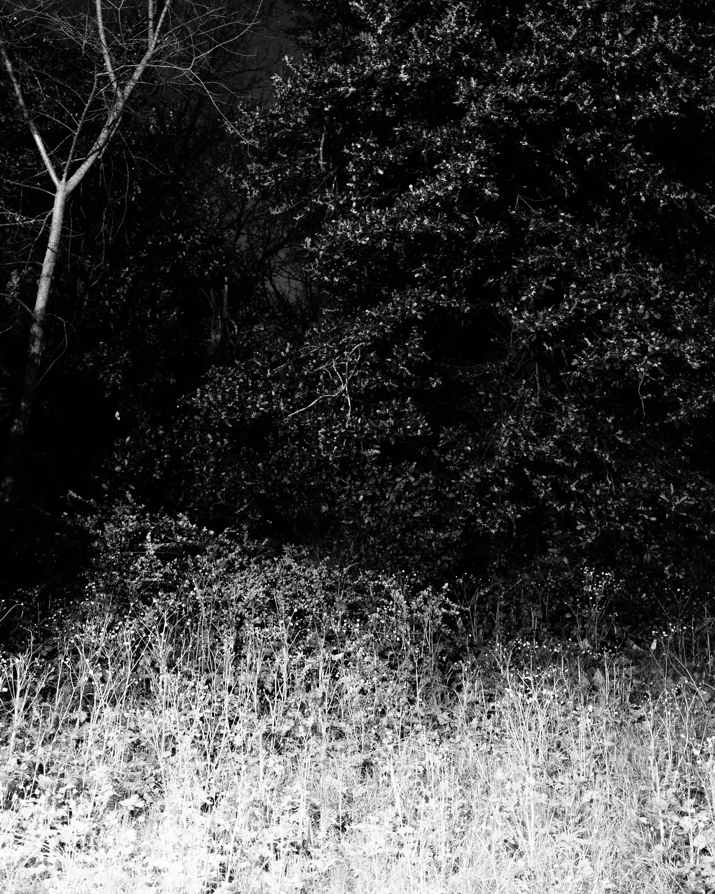
Gli alberi non dormono
Like all living organisms, trees regulate their cycles through the alternation of light and darkness. Artificial light interferes with this natural rhythm, affecting processes such as growth and photosynthesis.
The effects of light pollution are not always immediately visible, but emerge over time, quietly altering natural balances.
Gli alberi non dormono was made at night in urban parks, using only existing public lighting. The photographs explore the tension between the beauty of nocturnal urban scenes and the vulnerability of ecosystems exposed to artificial light.
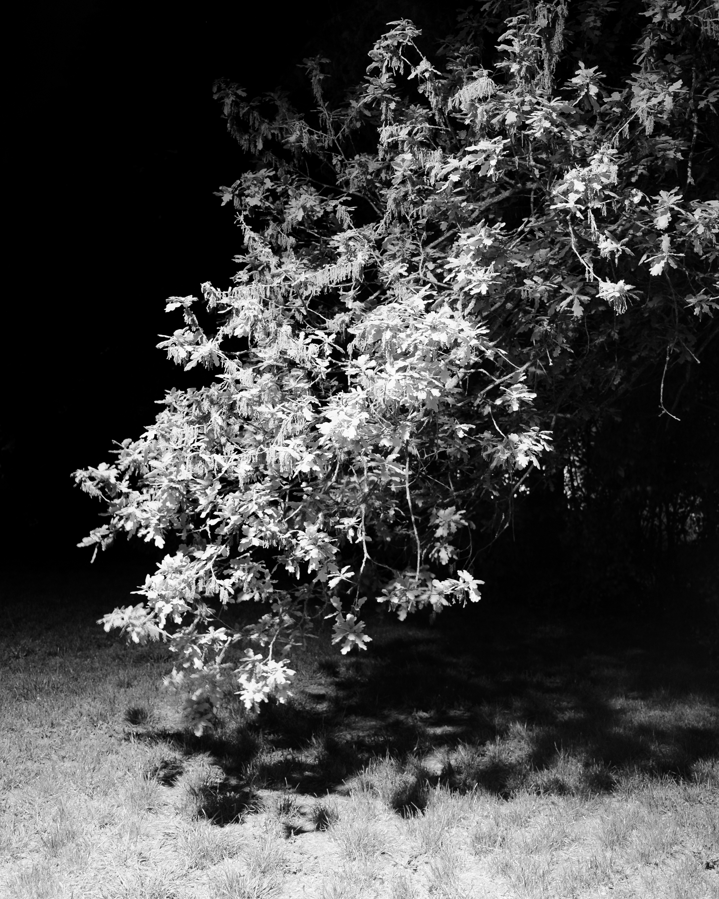
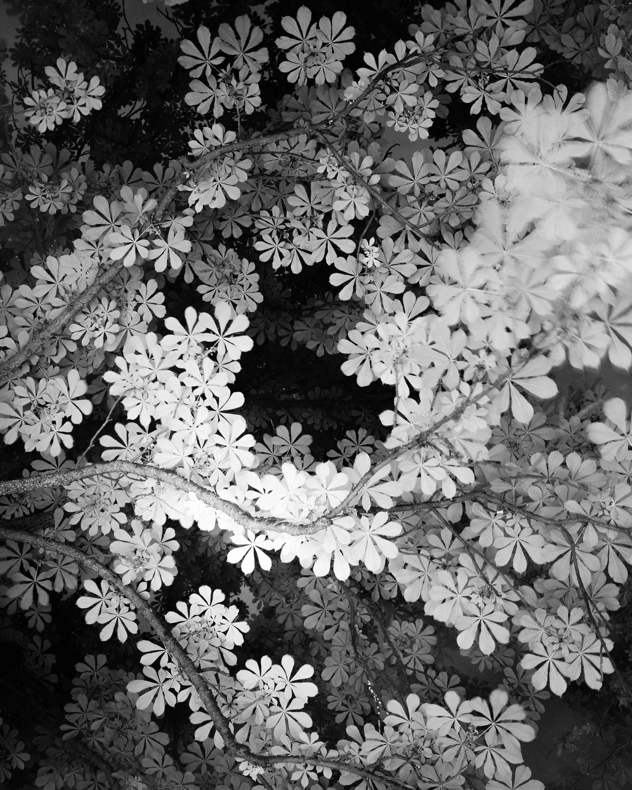
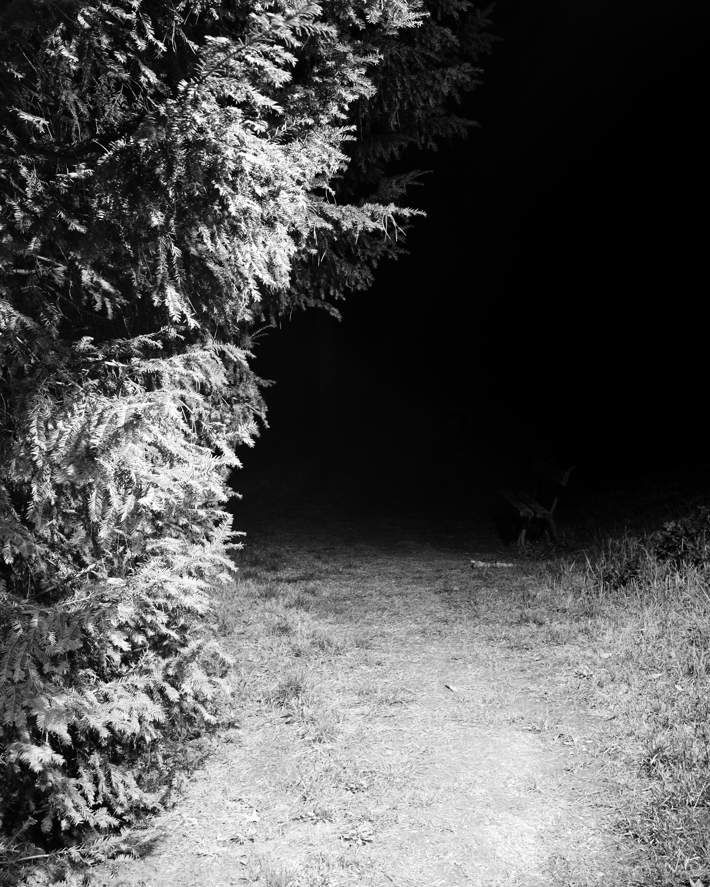
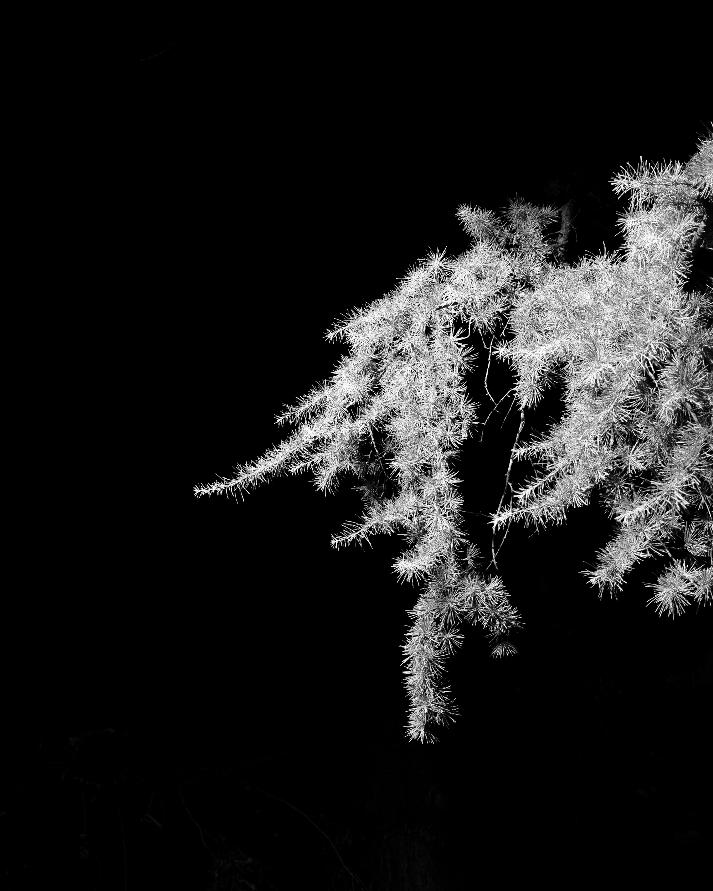
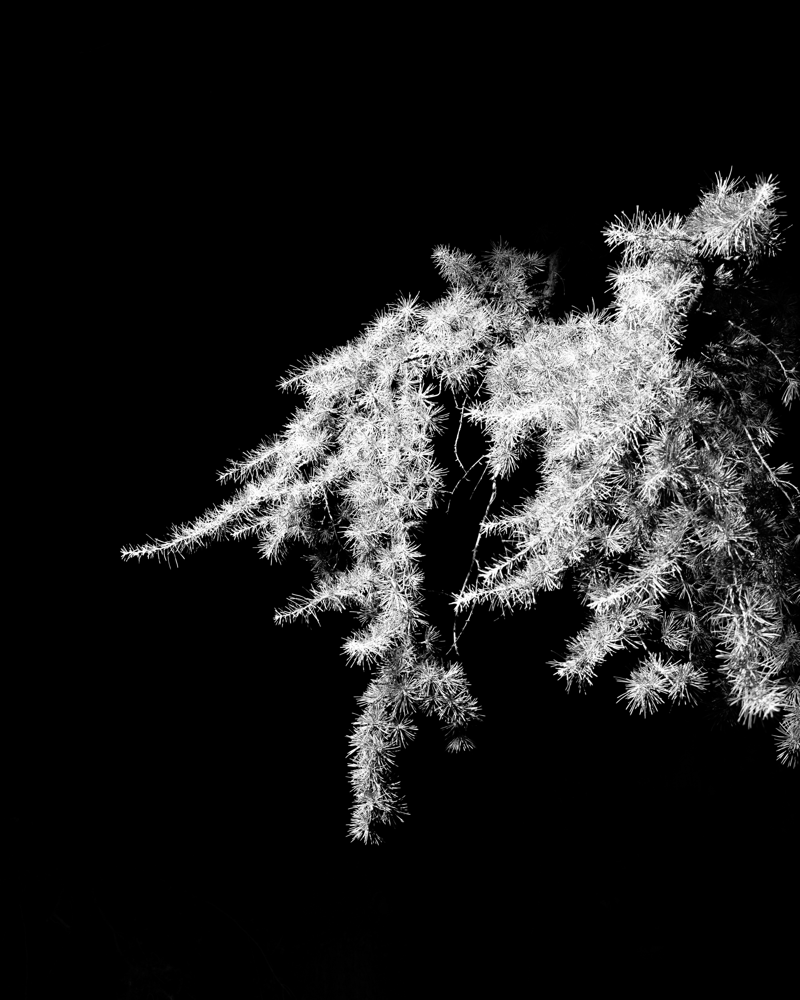
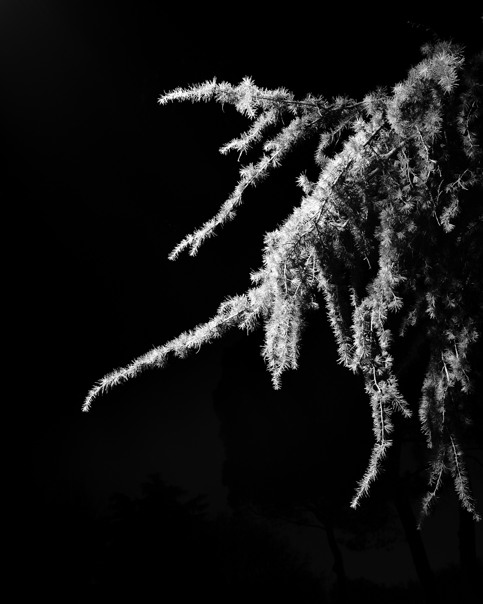
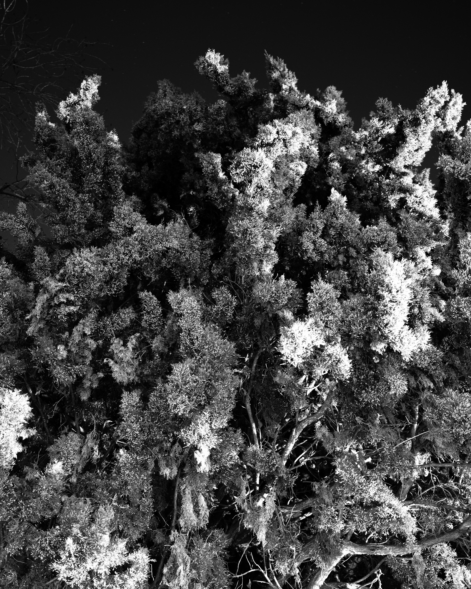
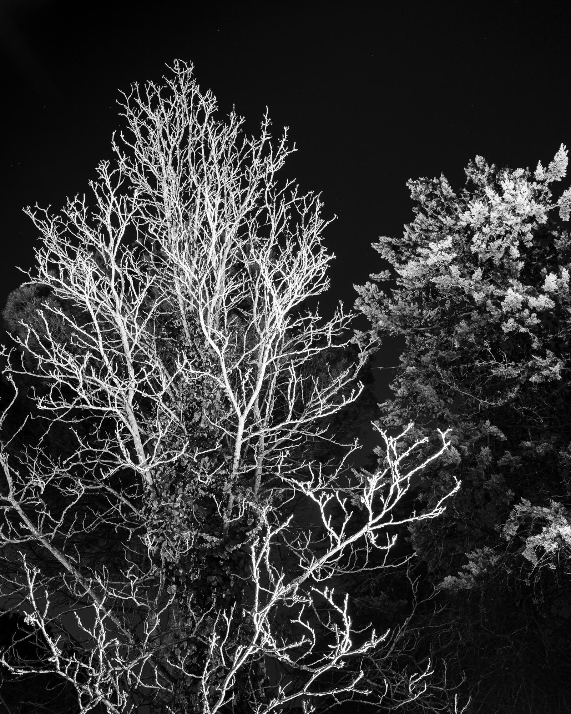
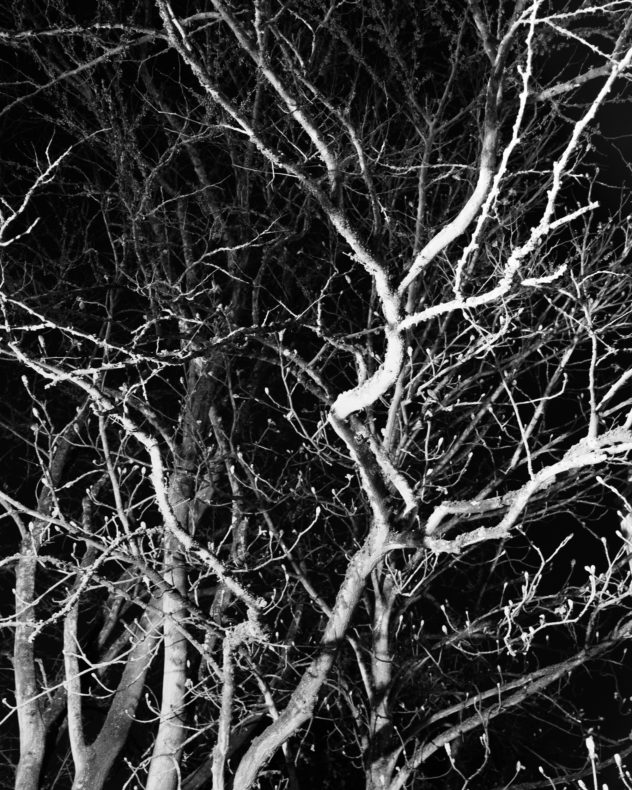
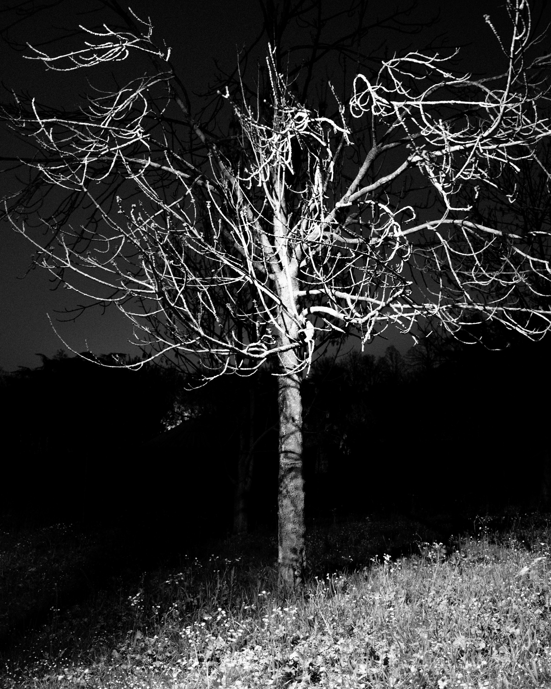
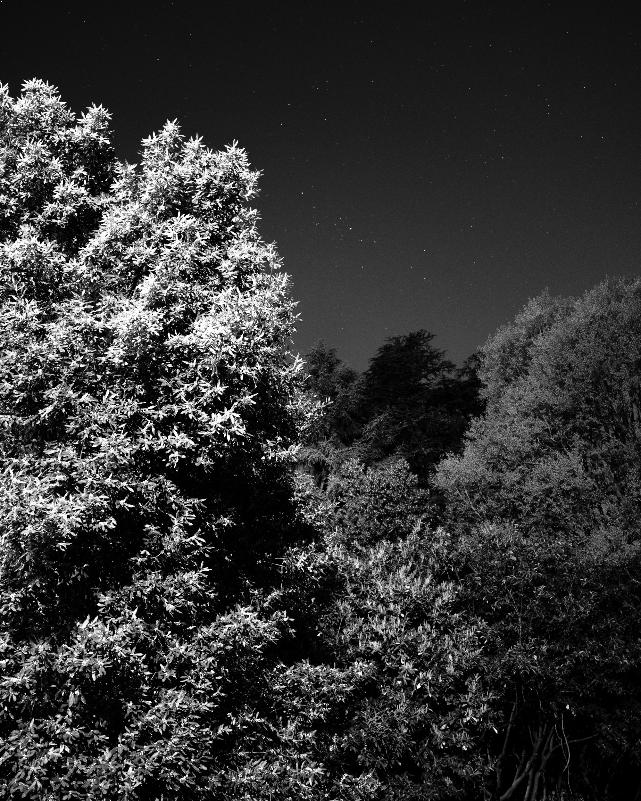